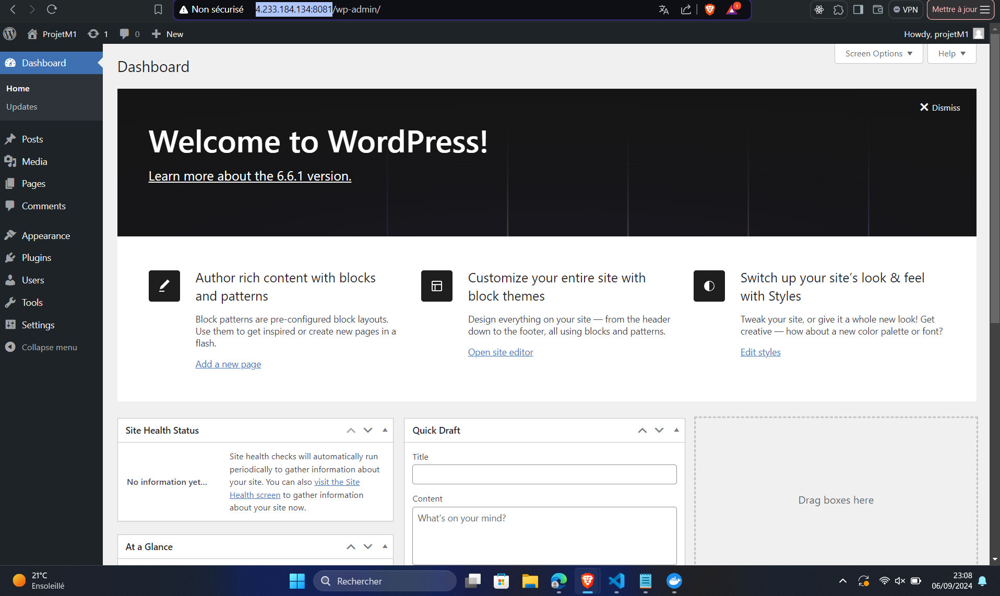
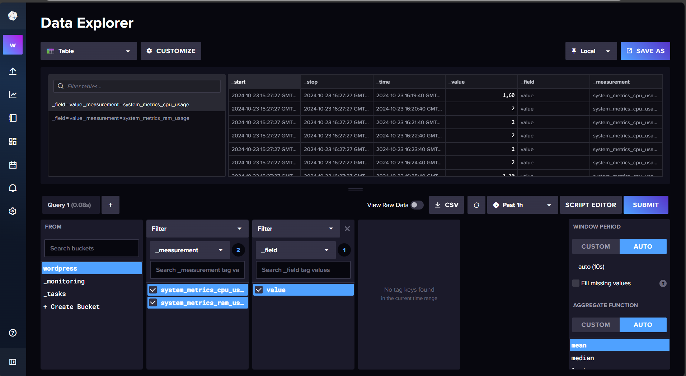
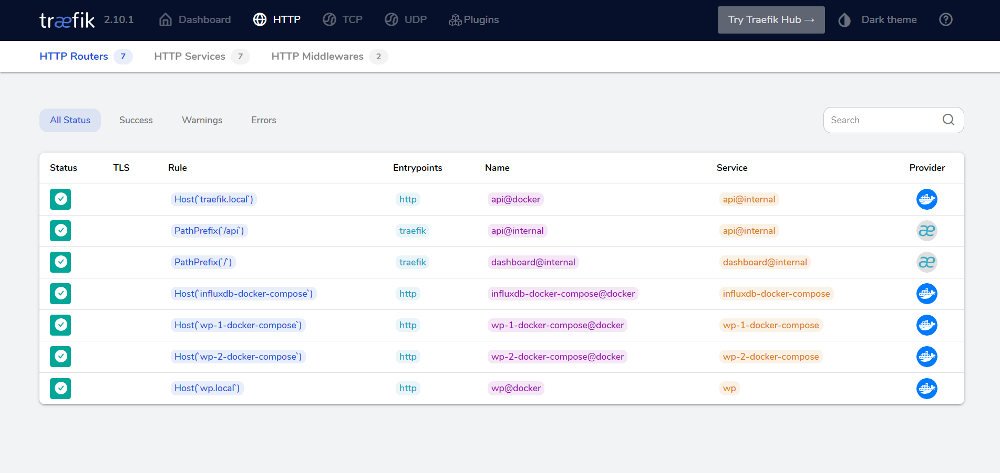

Le Projet Github
Github mainGitlab
Mettre en place GitLab pour héberger le code et exécuter les tests automatisés (CI/CD) du blog.
Github GitlabWordPress
Mettre en place WordPress
Github WordPress InfluxDB
Mettre en place InfluxDB pour collecter et afficher les métriques CPU et RAM de WordPress.
Github InfluxDB Traefik
Mettre en place un reverse proxy Traefik de manière conteneurisée.
Github Traefik MariaDB
Mettre en place MariaDB
Github MySQL